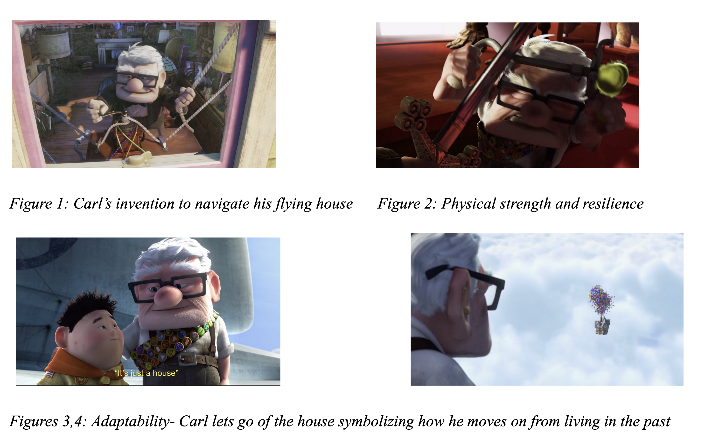

Nostalgic Media: A Remedy for Ageism?
How symbols in popular culture evoke nostalgia—the positive effects of which may help us counter ageism against older adults.
This paper was originally submitted as the final project for WRDS 150A “Writing and Research in the Disciplines” at UBC, Vancouver on December 5, 2020.
Abstract
As both older adults and the media assume a greater role in modern society, it is important to address ageism against older individuals and the role the media plays in exacerbating it. Children’s films and TV shows have often put forth negative and harmful depictions of older adults which can contribute to ageist attitudes from early on. A ray of hope: in recent years, the positive effects of nostalgia as a psychological mechanism have been highlighted, especially its potential to increase social connections and reduce prejudice. Thus, this paper, analyses how media—especially children’s media—can evoke interpersonal and inter-generational nostalgia among viewers which, along with its positive effects like aversion of death anxiety, increased social connectedness, continuity of self etc., can reduce ageist attitudes in society. I use Disney-Pixar’s film Up (2009) as a case study to evaluate the specific elements that can make a piece of media nostalgic. This exploration points towards several key elements as symbols of nostalgia in media: protagonists who are chronologically older in age, who have similar struggles, experiences, desires and values as the audience in a specific context etc. The extent to which this nostalgia can actually effectuate a change in people’s ageist attitudes and behaviors is discussed and finally, possible avenues for further research in how nostalgia can be utilized by filmmakers in practice to deter ageism and, at the same time, create commercially viable media.
Keywords: nostalgia, ageism, media and film, Disney-Pixar’s Up, positive effects, IET
Introduction
Ageism is a prevalent and insidious form of prejudice characterized by negative stereotypes, apathy and discrimination toward older adults that can have a grave impact on their health and well-being. Different theories as to why ageism prevails have been posited; I argue that to address ageism from its roots, the explanation from the Terror Management Theory (TMT) is the most compelling. It states that growing older (and older age) is associated with increased mortality salience, so by stigmatizing older adults one can distance themselves from their future older self and inevitable mortality which alleviates death anxiety (Turner et al., 2017).
Recent research such as Sedikides et al. (2008) identifies nostalgia as a potent mechanism for coping with mortality salience as it strengthens social bonds and imbues life with meaning. Consequently, I will examine nostalgia as a tool to tackle ageism through the means of media and popular culture. I discuss the immense potential of media and popular culture in reinforcing ageist attitudes and argue that reforming the media depictions of older adults are crucial to dismantling ageism from its roots. Next, I will present nostalgia as a promising solution to ageism, analyzing the film Up (2009) to explicate the key features of nostalgia that are effective to generate the desired nostalgia followed by an investigation of how this nostalgia can actually affect the behavior of the audience. I will, then, suggest future directions for research.
The Importance of Media
For the purposes of my research, ‘media’ will be used to refer to films and TV shows, the internet, advertisements, publications, and other forms of mass media. Media, then, is the largest cultural arena in which societal perceptions and attitudes towards individuals of various social groups are formed—including older adults. Several analyses have indicated that older adults have been consistently underrepresented or misrepresented in mainstream media, either setting unrealistic standards for older adults, or exaggerated mockeries which fuel ageist stereotypes. (Loos & Evans, 2018). For example, in Disney’s Snow White and The Seven Dwarfs (1937), 101 Dalmatians (1961) and Tangled (2010), the antagonists are all depicted as evil, old women who are obsessed with being young, beautiful and attractive. Ageism must be addressed where it starts—childhood, as research finds ageist attitudes even in young children which are, at least in part, socialized in them through such media (Isaacs & Bearison, 1986). Thus, this paper shall use another one of Disney’s childrens’ animated films: Up (2009) to exemplify how anti-ageist attitudes can be promoted by inducing nostalgia in the viewers. The film spans across the life of Carl Fredricksen, a 78-year-old who has lost his wife Ellie. In order to fulfill her dream, Carl flies his house to South America where he finds himself a new adventure. This film is chosen due to its commercial and critical success, how it arguably appeals to audiences of all ages and demographics, and most importantly because it acts as a prime example of media that generates mostly positive nostalgia.
Inducing Nostalgic Feelings Through Popular Media
Older Adults As The Protagonists
There is promising evidence supporting the effectiveness of nostalgia to reduce prejudice (Cheung et al., 2017). Nostalgia further emerged as a potentially effective method of combating ageism; Turner et al. (2017) empirically evidenced how nostalgia increased social connectedness which led to an increased Inclusion of Out-Group in the Self (IOGS) effectuating reduced ageist attitudes in young adults. However, not everyone can relate to the media such as to trigger nostalgia within them especially if that individual has had no prior positive experiences with older adults. Gaggioli et al. (2014) and Wildschut et al. (2018) offer a promising solution to this problem, demonstrating how nostalgic emotions can be transferred from older adults to younger adults through Interpersonal Emotion Transfer (IET) even when the nostalgic recollection is unrelated to the self. Furthermore, the ‘self’ is often a protagonist in nostalgic narratives. (Sedikides et al., 2008; Wildschut et al. 2006). These facts implicate that when seeking to remedy ageism through nostalgic media an important characteristic is an older character to be the protagonist—central to the nostalgic narrative. Up was the first Disney film to feature an older adult as a protagonist: 78-year-old Carl Fredicksen. Seeing older adults as the protagonists may additionally normalize their very existence in the audience’s mind and increase the self-esteem of older adults who may feel seen and represented in media.
“You’re Not Alone”
IET depends on the vividness, specificity, emotional empathy and universality of nostalgic themes as research indicates that several key themes run throughout nostalgic events (Wildschut et al., 2018). In Up, Carl is nostalgic for his childhood and the past that he spent with his wife, Ellie. Throughout the film he holds on to his house as it symbolized Ellie, even talking to the house as if it were her. But to make this nostalgic account more relatable, the famous ‘Married Life’ sequence depicts Carl’s life up to his old age which shows him falling in love, getting married, building the house with Ellie, attempting to have a child, struggling with infertility, domestic activities, financial troubles, growing old and finally experiencing the death of his beloved Ellie. This sequence is moving and nostalgic not only because it gives depth to Carl’s nostalgia which promotes IET as the audience reappraises their own surroundings in an emotionally congruent (i.e. nostalgic) manner (Wildschut et al., 2018), but also because it may make the audience nostalgic for their own past—their childhood, falling in love, memories with grandparents etc. Thus, media which depicts the older adult as not just nostalgic but also relatable may be more appealing and make older adults recipients of the positive effects of nostalgia like social connection and IOGS ultimately reducing ageist perceptions.
Nostalgia in a Context
Dey (2015) analysed how the nuanced representations of older individuals in Indian popular media generated a collective ‘nostalgia of values’ (i.e. for collectivist values: duty, responsibility, selflessness) promoting positive behavior toward older people. This principle can be applied to connect individuals to defining values within their culture that are closely-tied to identity, supporting the notion that nostalgia promotes continuity of the self (Sedikides et al, 2008). Thus, generating nostalgia for values which are characteristic of individualistic cultures by depicting them on-screen can serve a positive purpose; at the beginning of Up, Carl is unmotivated, frail, resistant to change and a ‘public menace’, but he soon emerges as an inventive, self-reliant, determined, adaptive and strong person (Individualistic values; e.g. Figures 1-4).

Even Up’s elderly villain, Charles Muntz, has valuable individualistic traits; he survives in the wilderness all alone for years, and is remarkably determined. This further reinforces the idea that older individuals can have valuable characteristics. It can then be reasoned that when a viewer becomes nostalgic for these values that an older person depicts, it leads them to greater IOGS as the older person now resembles qualities that the viewer holds in high regard and were probably imbued in them at a young age.
Since children’s films come with the assumption that families watch these movies together, the film itself can also become a symbol of nostalgia as viewers associate it with fond memories shared with loved ones. This along with the intergenerational nostalgia from the content of the media can decrease feelings of loneliness, and have a positive effect on the well-being and quality of life of older adults (Gaggioli et al., 2014).
Nostalgia from aesthetic
Nostalgia has many different kinds of triggers, one of which is sensory inputs (e.g. Reid et al., 2015; Barrett et al. 2010). The advantage of using media to generate nostalgia is that it can use sensory inputs such as the background score of the movie, the color palette etc. Up tactfully utilizes these film elements; Carl and Ellie’s house represents the 50’s ‘American Dream’, as the audience becomes nostalgic by witnessing their domestic life. There is a juxtaposition of this idealized past with the present where Carl is frequently exposed to diverse groups of people—indicative of modernization. He forms a positive relationship with Russell, the Asian-American child who accompanies Carl on his adventure, ensuring that the previously mentioned symbols of nostalgia promote a reflective (vs. restorative), future-oriented nostalgia.
Similarly, the background score in the ‘Married Life’ sequence is a jazzy-blues melody reminiscent of the 30s and 40s. This music is also employed several times throughout the film to convey that Carl was feeling nostalgic for his past especially when Carl looks through Ellie’s ‘Adventure Book’ and has an emotional, nostalgic realization motivating him to go and save Russell—imbuing his life with meaning. The music emphasizes Carl’s nostalgia which likely transfers to the audience. Hence, sensory and aesthetic elements can also serve as symbols of nostalgia with the caveat of promoting some of the negative effects of nostalgia if implemented without a compelling anti-ageist narrative to go with it.
From Reaction to Action
Research indicates that nostalgia is often triggered by negative affect e.g. loneliness, aversion/avoidance, existential threat etc. (Stephan et al., 2014; Sedikides et al., 2008; Turner et al., 2017; Wildschut et al., 2006). Stephan et al. (2014) demonstrates how avoidance triggers nostalgia which consequently increases approach- increase in helping behavior, seeking proximity etc. This is important to understand how nostalgia can actually translate into meaningful action; the media can bring people’s worst perceptions about older people into the spotlight (induce avoidance) and make them confront their biases head on. Up achieves exactly this as Carl is introduced to the audience with all the negative stereotypes of old people such as him being grumpy, intolerant of the young (e.g. turning away Russell), weak (e.g. needing a walking cane, and being hard of hearing). Two nurses even make an ageist joke about Carl needing to use the bathroom “80 times a day”. But by the end of the film Carl is a strong, inventive, independent man with a purpose and meaningful social bonds. By subverting the characteristics associated with old age, the audience’s avoidance towards older people evolves into ‘approach motivation’ mediated through nostalgia and its associated positive effects.
Documentaries and films like Up, especially in an educational context, can appeal to auditory and visual learners, lead to increased awareness and reflection, critical thinking and active learning. (McCleary, 2013). This is why childrens’ films have a great potential in remedying ageism from its roots in early life media exposure. Childrens’ films also come with the assumption that parents and other adults like teachers will accompany children in viewing the film and their ageist attitudes can be reformed as well.
Conclusion and Future Directions
In this paper, I identified the key features of nostalgic media that would counter ageism in society; older adults being represented as relatable protagonists in a nostalgic narrative, contextual and aesthetic nostalgia, and moving the viewers to actively confront their internalized ageism. This exploration provide a guideline for future research to empirically test these features. Further research can also narrow down the scope of study to a specific form of media as the nature and audience of each medium are unique. This paper does not consider the negative repercussions of certain depictions of older adults in nostalgic narratives as recent research has found that collective nostalgia can actually increase outgroup exclusion (Sedikides & Wildschut, 2019). Therefore, the distinction between the objects of nostalgia which separate the older and younger generations must be discerned. Another limitation is that I only consider one case study which has two older male characters whereas many negative depictions of older adults even in Disney have been of women. It is necessary to consider sexism when we study ageism as they often co-occur.
In the 21st century, as older people assume greater proportion and roles in society due to advancements in healthcare, it is important that media not only avoid ageist representations of them but also take steps to remedy the harm that has already been done. Filmmakers have an added incentive to create such ‘nostalgic media’ as older populations’ growth also means that they are also a greater proportion of media consumers than ever before, contributing to commercial success—as was the case with Up. There is a growing body of evidence to suggest that nostalgia can indeed be a potent tool to address social issues like ageism and that media can play a significant role in doing so (Turner et al., 2017; Gaggioli et al., 2014; Wildschut et al., 2018). Thus, nostalgia has proven itself to be more than just an escape to the past- that it has implications for the future and may hold the key to unraveling ageism by improving inter-generational relationships at the level of the individual.
References
Barrett, F. S., Grimm, K. J., Robins, R. W., Wildschut, T., Sedikides, C., & Janata, P. (2010). Music-evoked nostalgia: Affect, memory, and personality. Emotion (Washington, D.C.), 10(3), 390-403. https://doi.org/10.1037/a0019006
Cheung, W., Sedikides, C., & Wildschut, T. (2017). Nostalgia proneness and reduced prejudice. Personality and Individual Differences, 109, 89-97. https://doi.org/10.1016/j.paid.2016.12.045
Dev, D. (2015). The Nostalgia of Values: Popular Depictions of Care Crisis towards Ageing Parents in India. Journal of Human Values. 2016;22(1):26-38. https://doi.org/10.1177/0971685815608060
Docter, P. (2009). Up [Film]. Hollywood: Walt Disney Pictures, Pixar Animation Studios.
Gaggioli, A., Morganti, L., Bonfiglio, S., Scaratti, C., Cipresso, P., Serino, S., & Riva, G. (2014). Intergenerational group reminiscence: A potentially effective intervention to enhance elderly psychosocial wellbeing and to improve children’s perception of aging. Educational Gerontology, 40(7), 486-498. https://doi.org/10.1080/03601277.2013.844042
Hand, D., Jackson, W., Sharpsteen, B., Pearce, P., Cottrell, W., & Morey, L. (1937). Snow White and The Seven Dwarfs [Film]. Hollywood: Walt Disney Productions.
Howard, B., & Greno, N. (2011). Tangled [Film]. Hollywood: Walt Disney Studios Motion Pictures
Isaacs, L. W., & Bearison, D. J. (1995;1986;). The development of children’s prejudice against the aged. International Journal of Aging & Human Development, 23(3), 175-194. https://doi-org.ezproxy.library.ubc.ca/10.2190/8GVR-XJQY-LFTH-E0A1
Loos E., Ivan L. (2018) Visual Ageism in the Media. In: Ayalon L., Tesch-Römer C. (eds) Contemporary Perspectives on Ageism. International Perspectives on Aging, vol 19. Springer, Cham. https://doi-org.ezproxy.library.ubc.ca/10.1007/978-3-319-73820-8_11
Luske, H., Geronimi, C., & Reitherman, W. (1961). 101 Dalmatians [Film]. Hollywood: Walt Disney Productions.
McCleary, R. (2013;2014;). Using film and intergenerational co-learning to enhance knowledge and attitudes toward older adults. Educational Gerontology, 40(6), 414-426. https://doi.org/10.1080/03601277.2013.844034
Reid, C. A., Green, J. D., Wildschut, T., & Sedikides, C. (2015). Scent-evoked nostalgia. Memory (Hove, England), 23(2), 157–166. https://doi.org/10.1080/09658211.2013.876048
Sedikides, C., Wildschut, T., Arndt, J., & Routledge, C. (2008). Nostalgia: Past, Present, and Future. Current Directions in Psychological Science, 17(5), 304-307. http://www.jstor.org/stable/20183308
Stephan, E., Wildschut, T., Sedikides, C., Zhou, X., He, W., Routledge, C., . . . Vingerhoets, Ad J. J. M. (2014). The mnemonic mover: Nostalgia regulates avoidance and approach motivation. Emotion (Washington, D.C.), 14(3), 545-561. http://dx.doi.org.ezproxy.library.ubc.ca/10.1037/a0035673
Turner, R. N., Wildschut, T., and Sedikides, C. (2018) Fighting ageism through nostalgia. European Journal of Social Psychology, 48: 196– 208. https://doi.org/10.1002/ejsp.2317
Wildschut, T., Sedikides, C., Arndt, J., & Routledge, C. (2006). Nostalgia: Content, triggers, functions. Journal of Personality and Social Psychology, 91(5), 975-993. https://doi.org/10.1037/0022-3514.91.5.975
Wildschut, T., Sedikides, C., & Robertson, S. (2018). Sociality and intergenerational transfer of older adults’ nostalgia. Memory (Hove), 26(8), 1030-1041. https://doi.org/10.1080/09658211.2018.1470645
Why Pixar’s ‘Up’ May Be The Most Successful Disney Movie Of All Time - The Disney Movie Review. Retrieved from http://www.thedisneymoviereview.com/132/